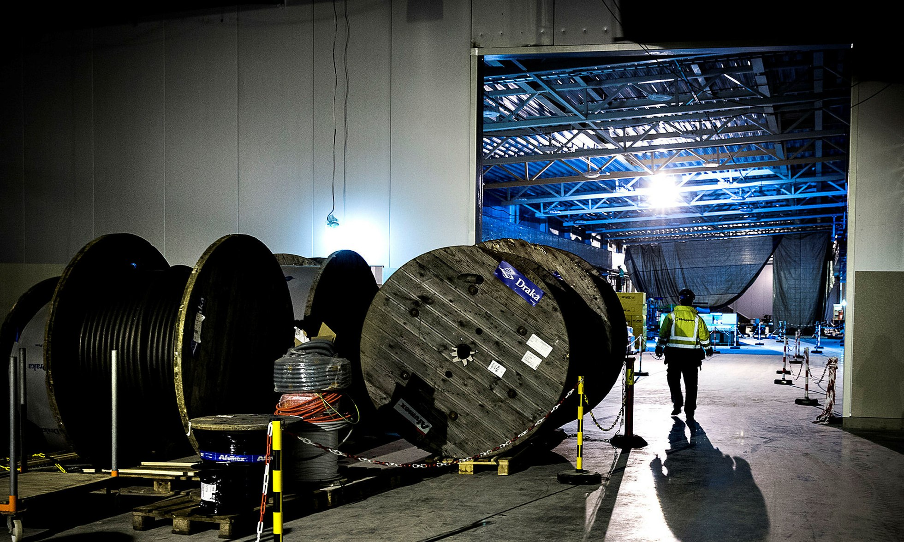
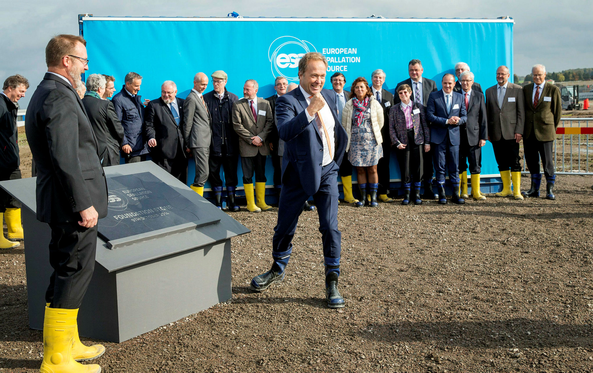

Regeringen har skrotat löftet om att befria alla ESS-anställda från skatt. Det gör att forskningsanläggningen kan kosta en kvarts miljard kronor mer – om året. Nu fortsätter ESS att jaga andra skattelättnader.
Sverige lämnade 2009 mängder av löften för att få bli värdland för forskningsanläggningen ESS. Svenska staten betalar ihop med Region Skåne 6,8 miljarder kronor för bygget. Och dessutom lovade Sverige att betala hundratals miljoner kronor till utländska forskningsprojekt, bland annat röntgenlaseranläggningen XFEL i Hamburg.

Bygget av forskningsanläggningen ESS i Lund pågår för fullt. Här är galleribyggnaden, som löper längs med den 537 meter långa acceleratortunneln. I galleribyggnaden finns el, kyla och andra installationer som behövs för acceleratorn.Bild: Lars Brundin
Men Sverige lovade också att ge ESS omfattande skattelättnader. Några har redan fallit på plats. Till exempel har riksdagen röstat igenom en speciallag som gör att ESS helt slipper att betala moms, energiskatt och andra punktskatter.
– Tyskland är inte intresserat av att betala skatt på energi till Sverige, sa utbildningsdepartementets statssekreterare Peter Honeth till Sydsvenskan i samband med att ESS började byggas i september 2014.
ESS kommer att förbruka lika mycket elektricitet som hela Laholms kommun: 270 gigawattimmar per år. Det innebär att ESS sparar drygt 60 miljoner kronor per år på att slippa betala energiskatt och moms på elen.
Men det allra viktigaste skattelöftet från Sverige var ett annat: de hundratals människor som ska jobba på ESS slipper att betala inomstskatt i Sverige.
Skattebefrielsen skulle ursprungligen gälla för alla ESS-anställda. Så var den svenska regeringens officiella löfte i 2009 års förhandlingar. Därefter har diskussionen successivt kommit att gälla enbart utländsk personal.
– Det här med befrielse från inkomstskatt har inte landat än. Men det är något som vi pratar om med våra kontakter på utbildningsdepartementet. Det här är en fråga som lever, men som inte är avslutad, säger Agneta Nestenborg, som är administrativ direktör på ESS, när vi träffar henne i Lund i början av november.
Agneta Nestenborg, administrativ direktör för ESS.Bild: Lars Brundin
För ESS är det avgörande att forskningsanläggningen kan locka till sig rätt personal, från hela världen. Och då är det en viktig morot att personalen slipper betala skatt.
– Det blir väldigt väldigt viktigt med skattebefrielse. I det långsiktiga perspektivet så överrider den frågan alla andra administrativa frågor som vi lever med just nu, säger Agneta Nestenborg.
Många utländska forskare på ESS kommer att ha kontrakt som löper på några år. Det är inte säkert att deras partner får jobb i Sverige, vilket gör att de måste försörja hela familjen på lönen från ESS. Då är skattebefrielse en viktig pusselbit för att forskarna ska välja just Sverige, lyder argumentet.
Löftet om att plocka bort inkomstskatten för de ESS-anställda kom från Fredrik Reinfeldts borgerliga regering under förhandlingsspelet om att få ESS till Sverige.
Men hur blir det nu med skattebefrielsen? Vi ringer till den ansvariga ministern Helene Hellmark Knutsson (S) och frågar. Då kommer hon med ett överraskande besked. Det visar sig att den nya, rödgröna regeringen har skrotat planerna på att ESS helt ska slippa betala inkomstskatt för de anställda:
– ESS har inte kommit med någon formell framställan till regeringen i den här frågan. Det beror på att ESS inte har lyckats skapa enighet i hela styrelsen och bland alla medlemsländer. Det finns ett motstånd mot den här skattebefrielsen från vissa länder, säger forskningsminister Helene Hellmark Knutsson (S).
– Däremot ska vi se till att ESS har goda villkor för rekrytering och inflyttning av kvalificerad arbetskraft. ESS har ju möjlighet att erbjuda sin personal svensk expertskatt, säger ministern.
Forskningsminister Helene Hellmark Knutsson (S) besöker ESS i september 2015.Bild: Lars Brundin
Lars Börjesson, som är ordförande i det internationella råd som styr ESS, bekräftar att flera länder satt sig på tvären och stoppat planerna på att ESS-personalen ska befrias från inkomstskatt.
Han säger att skattediskussionen fördes för flera år sedan och varit en död fråga sedan dess.
– Den fördes i den då rådgivande internationella kommittén inför bildandet av ESS ERIC. Det har inte varit en fråga för det internationella rådet sedan dess, säger han.
Professor Lars Börjesson, som också är ordförande i det internationella rådet som styr ESS, gör segergesten när grundstenen till forskningsanläggningen kommer på plats i oktober 2014.

Bild: Peter Frennesson
Men den informationen har uppenbarligen inte nått fram till de högsta tjänstemännen på ESS.
– Det här har inte jag hört, säger Agneta Nestenborg, administrativ direktör på ESS, när vi ringer tillbaka till henne.
Det här gör ju att driftskostnaden för ESS ökar kraftigt. Hur ska ni klara det?
– Jag får fundera på det. Det är politikerna som tar besluten. Det är något vi får anpassa oss efter. Men just i detalj hur vi ska hantera det här vet jag inte, säger Agneta Nestenborg.
Det skrotade löftet om skattebefrielse kan bli dyrt för ESS - och i förlängningen för skattebetalarna i Sverige och Danmark.
I maj 2015 skickade spanska näringsdepartementet ett varnande brev till svenska och danska regeringen om vad som händer om skattebefrielsen inte blir av. Spanien påpekar att då blir ESS 200 - 300 miljoner kronor dyrare per år. Det är ungefär en femtedel av driften för ESS.
Den spanska statssekreterare Carmen Vela Olmo skriver i brevet att det är "väldigt viktigt" att Sverige och Danmark driver igenom skattelöftet. Om ESS inte kan få nya skattelagar anser Spanien att det är "nödvändigt att hitta alternativ för en kostnadsminskning på liknande belopp, kanske en ökning av värdländernas bidrag till ESS under driftperioden".
Det kan alltså innebära att Sverige och Danmark får betala ytterligare en kvarts miljard kronor per år.
Nu fortsätter ESS att pressa på för att få bättre skattevillkor. Till exempel vill ledningen för ESS att den svenska expertskatten efter dansk förebild ska förlängas från tre till fem år.
Den nuvarande svenska expertskatten innebär att utländsk personal slipper skatta för 25 procent av sin inkomst i Sverige under sina tre första år i landet. Vissa förmåner är också helt skattebefriade, som kostnaden för barnens skolgång i Sverige och två hemresor per år.
När det internationella rådet som styr ESS hade sitt senaste möte beslutade de också att driva frågan om skattebefriesle för utländsk personal som är i Sverige en kortare tid för att installera forskningsutrustning på ESS.<7h3>